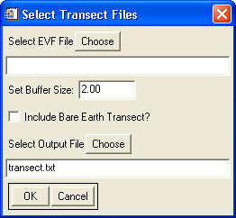

Using "Create Elevation Profile(s)"
This tool is meant to create elevation profiles along one or more user-defined transects.

Usage:
- Select the input LiDAR data file(s) which contain the transect area(s). If data files are selected which do not contain a transect, they will be ignored.
- Select an EVF file which contains one or more transects. (The selected EVF file must have the same projection and datum as the LiDAR data.)
- Set the buffer size. This parameter sets the size of the buffer around the transect with which to compute the profile. It is in the units of the horizontal coordinates of the data.
- Check the "Include Bare Earth Transect" to create a profile of the bare earth elevation. This requires that the input LiDAR data have previously been processed through the height filtering.
- Select the output file. While this tool will produce a graph of the elevation profile, it will also save the profile data to a text file. The saved data will include X, Y, and Z coordinates of each point along the profile, as well as the distance along the transect and, if requested, the bare earth elevation.
- If the EVF file contains multiple transects, then a graph and a corresponding text file will be created for each individual transect. The text files will be numbered sequentially. (I.e. "transect1.txt", "transect2.txt", etc.)
Back to LidarTools home page.
Notes:
- This tool requires data that are in the LAS format.
- The profiles extracted by this tool are calculated directly from the raw point data, without any interpolation to a raster. The resulting profile is equivalent to the intersection of the transect with a TIN (triangulated irregular network) created from the LiDAR point data within the buffered area around the transect.
Comments?
• Idaho State University • Boise Center Aerospace Laboratory • 322 E. Front Street #240 • Boise, Idaho • 83702 •